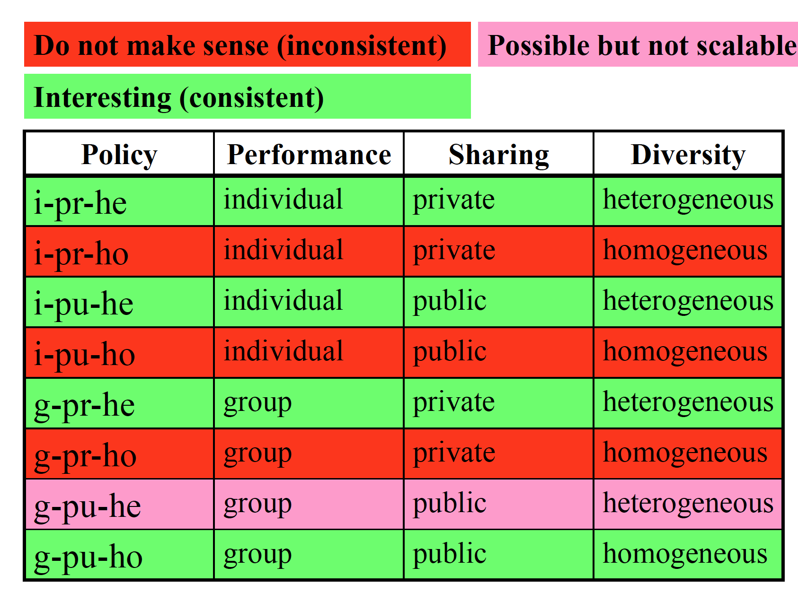
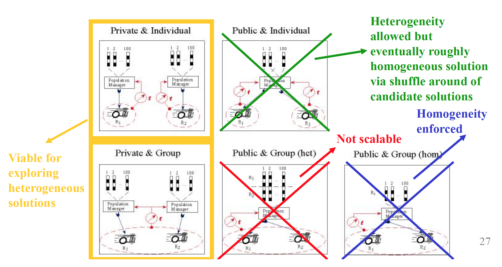
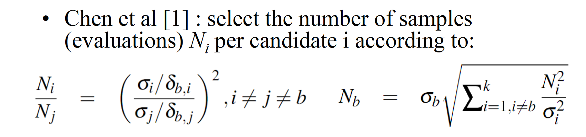
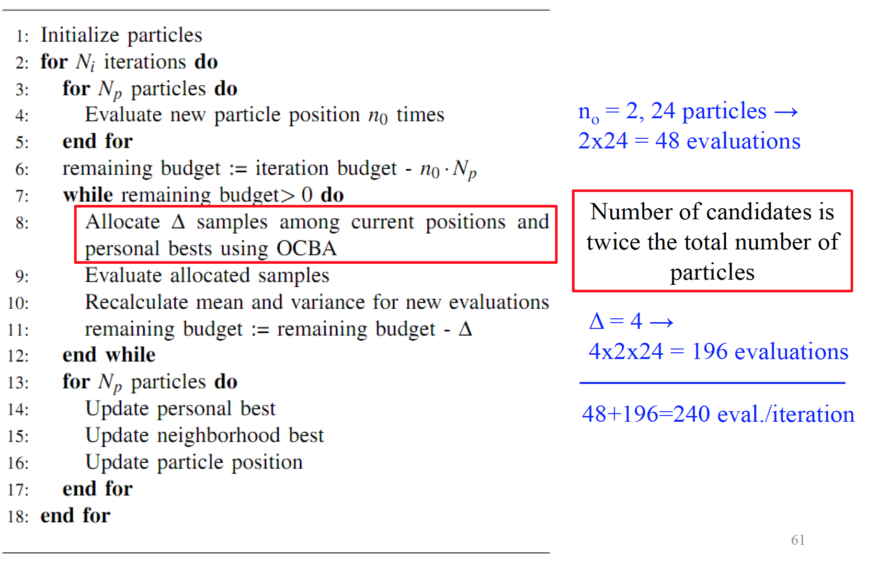
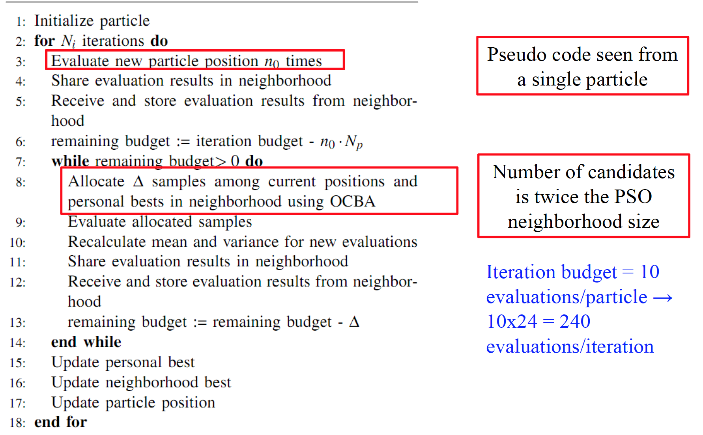

Better assessment of actual performance of a candidate solution through re-evaluation and aggregation of pbest performances over iterations.
Increasing the population size does not help the fitness (contrary to GA). The impact of noise on fitness also depends on the sign of the noise : large negative noise has a strong impact
NR Algorithms make a difference when :
Hybrid adaptation : move from sim to real after 90% of iterations
In collective setting fitness becomes noisy because of partial perception, independant parallel actions. If communication is limited, a robot cannot distinguish between the environmental modifications caused by its own actions from those generated by others.
Axes for co-adaptation :


Standard index based neighborhood : Default neighborhood: ring topology, 2 fixed indexbased neighbors for each particle. Problem for real robots: neighbors could be very far away
Communication-Based Neighborhoods : use 2 closest robots in the area (capacity limitation) or use all robots within a radius (range limitation).

Intuition : More samples for candidates with higher variance + mean closer to the best.
Proven that maximizes probability of correct selection of best candidate b for infinite total number of samples (evaluations) T. But “works well in practice” for finite number of samples (evaluations) T

Each particle conducts its own OCBA allocation
Candidates for OCBA are new positions and pbests in neighborhood
N candidates = 2 * Neighborhood size
Mean and standard deviation can be calculated online by storing only the previous values and the number of samples
Memory and communication overhead is small
and constant
The cost of an optimization problem is heavily influenced by the amount of noise in the evaluation function, the time needed for evaluating a candidate solution, and the dimension of the parameter space
Collaborative co-adaptation strategies can be differentiated along three axes:
Multi-robot platforms can be exploited for testing in parallel multiple candidate solutions
One way to bypass the credit assignment problem in multi-robot contexts is to enforce homogeneity and reward group performance
PSO appears to be well suited for fully distributed on-board operation and fairly robust to small pools of candidate solutions
A series of noise-resistant techniques have been presented for dealing with noisy problems in multi-robot systems